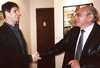

|  |
When you click OK, you will be redirected to it's new location. They are all 640 by 480 pixels, 800 by 600 pixels or 1024 by 768 pixels, which means they are all large enough to give full screen images on an average computer monitor. To download them, just click on the image you like and when the full size image opens, just select it. When the dialogue box appears, select save image or save as wallpaper, depending on your web-browser. How to mount the images The method of mounting these images will vary, depending on the operating system your computer uses. |